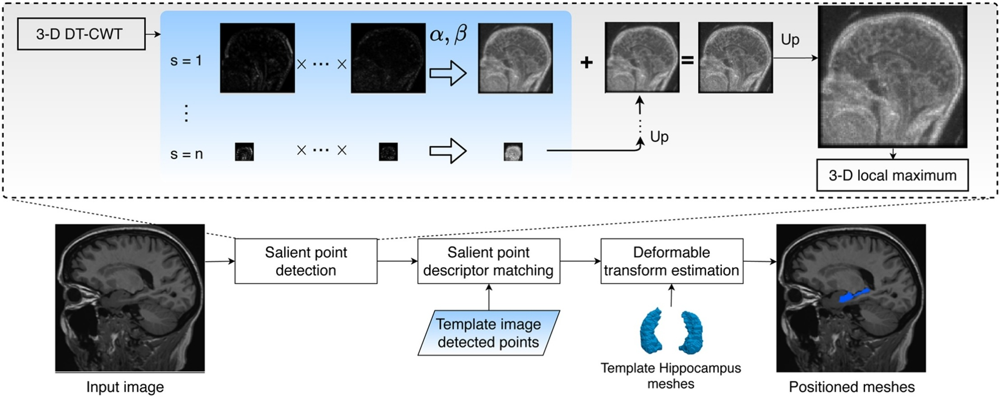
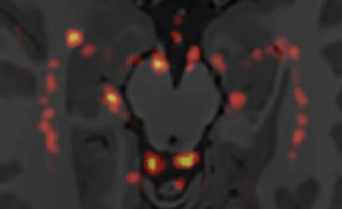

Research interests
I have been associated with a diverse range of approaches in research on the visual side of computing. Currently, my greatest research interest lies in the development of art-driven tools to aid the development of visuals in 3D animations. I am becoming passionate about learning the math that describes phenomenons we observe in our daily lives and finding ways to transpose it algorithmically allowing artistic interventions. Below you can check publications from when I worked with 3D Medical Image Processing.

Detector of 3-D salient points based on the dual-tree complex wavelet transform for the positioning of hippocampi meshes in magnetic resonance images
Journal of Neuroscience Methods 2020
Detector de pontos salientes 3D baseado na DT-CWT com aplicação no posicionamento de malhas deformáveis em imagens de ressonância magnética do cérebro
Master's Dissertation (in portuguese)

Construction and Application of a Probabilistic Atlas of 3D Landmark Points for Initialization of Hippocampus Mesh Models in Brain MR Images
Computational Science and Its Applications - ICCSA 2018